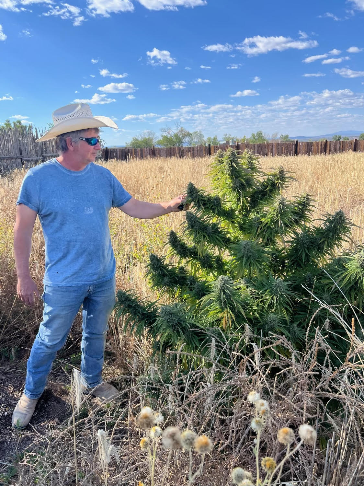
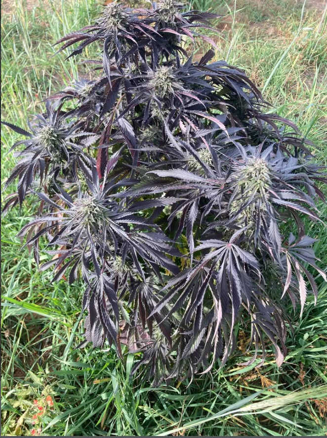
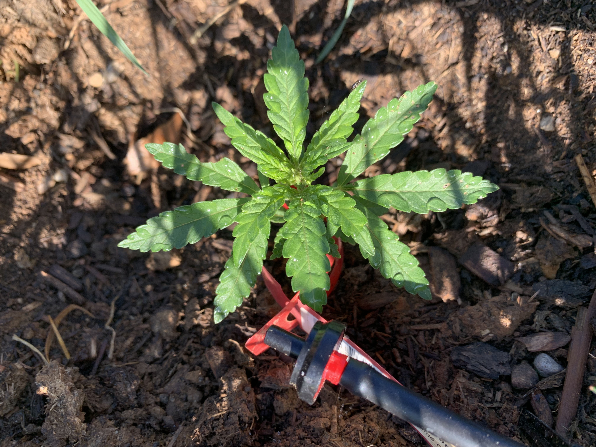
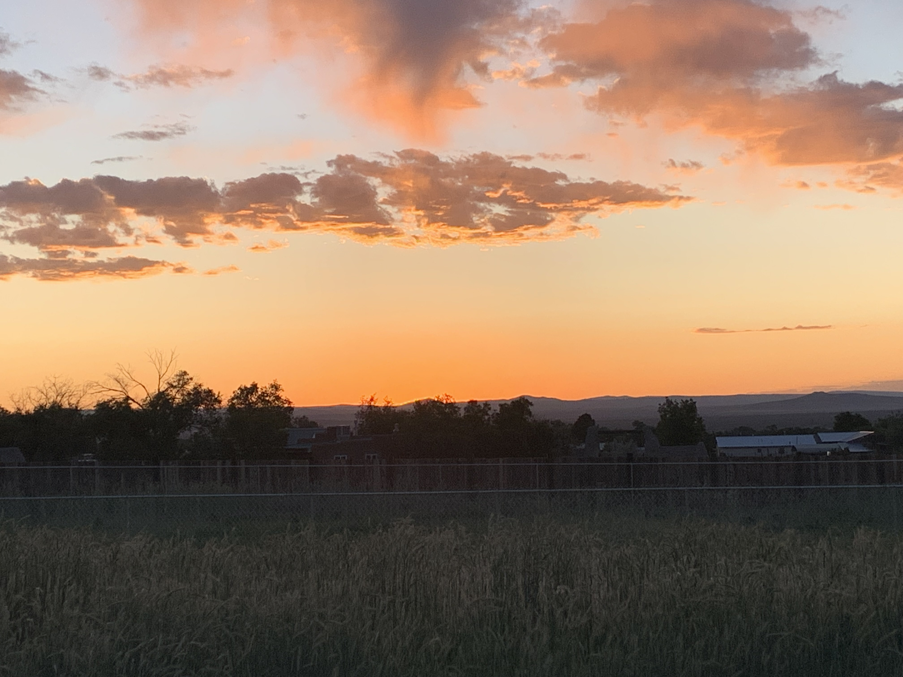

Licensed Cannabis Microbusiness — Taos, New Mexico
Grown in Taos.
Rooted in Care.
Small-batch, sun-grown cannabis from the heart of New Mexico.
Explore Our Strains
A New Chapter
on the Land
Finca Verde is a family-owned cannabis farm rooted in Taos, New Mexico. After retiring Youney, Inc. in 2025, Matt and Kat moved to Taos to begin a new chapter built around land, community, and a lifelong dream of farming.
What started as a personal grow quickly became something more. Matt discovered a natural talent for cultivating cannabis, then took the proper steps at the state and county levels to establish Finca Verde as a licensed cannabis producer microbusiness serving local legal cannabis shops.
The farm is grown outdoors on land with water rights and access to an acequia that brings mountain water to the property. With Matt's engineering background, he designed an efficient drip system that brings water directly to each row and plant. Seedlings are started in the greenhouse, then moved outside once they are strong enough to thrive under the Taos sun.
Finca Verde is focused on small-batch cannabis, healthy soil, and sustainable growth. By using practices like cover cropping, manure, and natural soil-building methods, the goal is to improve the land season after season while growing high-quality cannabis with care.
For Matt and Kat, this farm is about more than cannabis. It is about living well, honoring local traditions, contributing to the community, and growing something they are proud to share.
Sun-Grown in Taos
Each strain is hand-selected and small-batch grown outdoors under the high desert sun — no shortcuts, no compromises.

Taos Purple Skunk
Deep purple hues with an earthy, skunky sweetness. A Taos original with roots as deep as the Sangre de Cristo mountains.

Ranchos Kush Skunk
Heavy, relaxing, and unmistakably Ranchos. Rich kush funk with a smooth finish grown in the valley.

Blueberry Cupcake
Sweet berry notes with a bakery finish. A balanced hybrid that's as delightful as it sounds.

Orange Creampop
Bright citrus and cream — uplifting and smooth like a summer afternoon in the high desert.

Jelly Donuts
Sweet, fruity, and irresistible. A crowd-pleasing hybrid with a sugary finish that keeps you coming back.
Know the Rules
Adults Only
Cannabis products are for adults 21 years of age or older. Valid government-issued ID is required at point of sale.
Don't Drive High
Do not operate a vehicle or heavy machinery while under the influence of cannabis. Impaired driving is illegal and dangerous.
Keep Away from Children
Store all cannabis products safely out of reach of children and pets in a secure, locked location.
Licensed Producer
Finca Verde is a state-licensed cannabis producer microbusiness operating in full compliance with the New Mexico Cannabis Regulation Act.
This website is intended for adults 21 years of age or older residing in the state of New Mexico. Products sold by Finca Verde are legal under New Mexico state law. Cannabis remains a federally controlled substance. Nothing on this site constitutes medical advice. Please use responsibly.
Find Us in Taos
Location
Taos, New Mexico
Hours
By appointment — contact us to schedule
Follow Along
